扉页
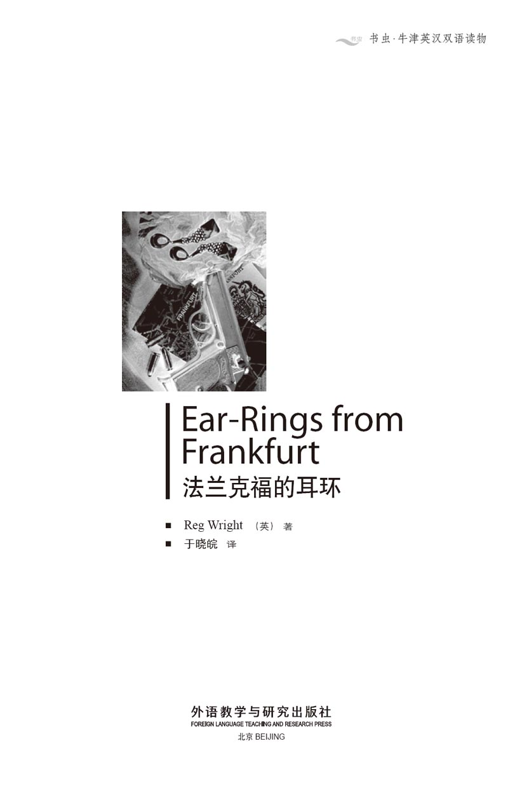
版权页
京权图字01-2006-3284
Originally published by Oxford University Press, Great Clarendon Street, Oxford. © 2000
This edition is licensed for sale in the People's Republic of China only and not for export therefrom.
'Oxford' is a registered trademark of Oxford University Press.
只限中华人民共和国境内销售，不包括香港特别行政区、澳门特别行政区及台湾省。不得出口。
图书在版编目（CIP）数据
法兰克福的耳环：英汉对照／（英）赖特（Wright, R.）著；于晓皖译．—北京：外语教学与研究出版社，2006.6（2014.1 重印）
（书虫·牛津英汉双语读物）
书名原文：Ear-Rings from Frankfurt
ISBN 978-7-5600-5531-2
Ⅰ．法… Ⅱ．①赖… ②于… Ⅲ．①英语—汉语—对照读物②短篇小说—英国—现代 Ⅳ．H319.4：I
中国版本图书馆CIP数据核字（2006）第037882号
出版人： 蔡剑峰
责任编辑：余 军 张志纯
封面设计：孙莉明
出版发行：外语教学与研究出版社
社 址：北京市西三环北路19号（100089）
网 址：http://www.fltrp.com
版 次：2006年6月第1版
书 号：ISBN 978-7-5600-5531-2
* * *
制售盗版必究 举报查实奖励
版权保护举报电话：（010）88817519
内容简介
内容简介
你有兄弟或姐妹吗？他们有时会给你的生活带来很多烦心事。要是他们比你年纪小的话，他们就总是会惹麻烦，要你来帮忙。
如果你知道了一个人的缺点，便会难以忘掉。俗话说：“一日为贼，终生为贼。”但真的是这样吗？一次错误会使一个人永远是一个坏人吗？人们就不能有所改变吗？
珍妮弗·沃尔顿是一名护士，她是个文静、细心而又通情达理的人，却有一个既不细心也不通情达理的弟弟，名叫理查德。他总是向人借钱，干任何工作都没有长性，并且和警方扯上了麻烦。珍妮弗对他非常担心。一天，当警察前来询问有关他的情况时，珍妮弗想到了最坏的可能。
EAR-RINGS FROM FRANKFURT
EAR-RINGS FROM FRANKFURT
Do you have any brothers or sisters? They can sometimes make your life very difficult. If they are younger than you, then they are always getting into trouble and needing your help.
And if you know something bad about a person, it is difficult to forget it. 'Once a thief, always a thief,' people say. But is that true? Does one mistake make a person bad for ever? Can't people change?
Jennifer Walton is a nurse. She is quiet and careful and sensible, but she has a young brother, Richard. Richard is not careful or sensible. He is always borrowing money, he never keeps a job for long, he's been in trouble with the police. Jennifer worries about him a lot. And when one day the police come asking questions about him, Jennifer fears the worst.
目录
1．A night out at Maxim's
1
A night out at Maxim's
Jennifer looked at the clock on the waiting-room wall. Nearly half-past eight. The light was still on in Doctor Gibson's room. I'm going to be late, she said to herself, why doesn't he hurry up? The evening surgery was always busy on Thursdays but tonight was worse than usual.
She quickly put the newspapers in a cupboard. Then she took off her white coat and locked it in the cupboard too. She was turning off the lights when someone rang the front doorbell. Oh no, not another patient, not at this hour. She ran to the door and opened it. Outside it was dark but she could see a man, his hands deep in his pockets. He moved his head and the light fell on his face.
'Richard!' she cried in surprise. 'What are you doing here?'
'Can I come in for a minute?'
He did not wait for an answer but pushed past her and went inside. Jennifer turned to him. She was usually pleased when Richard called, but this was the wrong time. 'I'm sorry, but you can't stay. I must hurry. I'm meeting my friend Claire for dinner and...' She stopped. It was Richard's eyes—they looked tired and worried.
'What's the matter?' she asked.
Just then Dr Gibson called from his room. 'Did I hear the doorbell, Nurse? Was it another patient?'
'No, it's only my brother Richard,' she called back.
She turned back to Richard. 'Is something wrong?' she asked again.
He shook his head. 'I'm fine,' he said. 'It's just... well, I had some trouble at work.'
'Trouble?'
'It was nothing, really. I said something to my boss and he didn't like it. He got angry with me and... and in the end he told me to go. So I've lost my job.'
'Oh Richard, not again! Why do you do these things?' Jennifer was beginning to feel cross with him. 'And now you have no money, is that it?'
'Take it easy, Jenny. I don't need very much. Only twenty pounds. I'll pay you back next week—really I will.' He put his hand on her arm. 'You can do that for me, can't you? Just twenty pounds. It's for a present.'
'Yes, I know, I know. A present for a very special girl—like the last one. And the one before.' Jennifer knew her young brother well and she was often angry with him, but she could never say no to him. She opened her bag, took out some money and gave it to him. 'But remember, I want it back next week.'
Richard smiled and put his arm around his sister. 'Thanks, Jenny. This is different. Really! She's very, very special. But you're in a hurry so I'll go now.'
'Don't forget,' she called after him. 'Next week. Twenty pounds.'
Maxim's restaurant was busy—young men and women from offices, several older people, a group of students, and a few theatre people. Jennifer looked around for her friend. Claire usually sat near the window but tonight she was not there. Somebody was having a party and all the tables on that side were full. Then Jennifer heard Claire's voice behind her. 'Did you get lost? I've been here for hours.'
'I know I'm late,' Jennifer said, 'and I am sorry. Today has been really busy. The last patient didn't leave until eight-thirty. And then I had a visit from Richard. He wanted to borrow some money. He always wants to borrow money.'
They went to an empty table. A waiter came up to them and took their orders. At that moment there was a cheer from the party beside the window. An older man in a light grey suit was standing up. He spoke for a few minutes and then held up his glass. All the others stood up, and looked at a young girl with large gold ear-rings, who was sitting in the chair next to him. Everyone was laughing, and then they began to sing 'Happy birthday to you'. They were all looking at the girl, but she herself just sat there without a smile on her face. The song came to an end, and there was another loud cheer and more laughing and shouting. Someone called out 'Twenty-one today, twenty-one today... ', and this time everyone in the restaurant sang too.
Suddenly there was a loud crash. Then someone screamed and a voice shouted, 'Bring a towel—quickly.' The man in the grey suit was lying across the table. He was holding his face, which was red with blood. On the table there was broken glass.
Someone said in a loud voice, 'What happened—did he fall?' Several people were speaking at the same time. 'It's his heart, you know ...' 'Joe's been in and out of hospital for years...' '...his head hit those glasses'.
The man was still lying across the table. Jennifer jumped up, and both she and Claire ran over to him.
'We're nurses,' said Jennifer. 'Can we help?'
There was a cut on the side of the man's face. It was deep and he was losing a lot of blood. A waiter ran up with a towel. Jennifer took it and held it to the cut. The man's mouth was open and he was making strange noises.
'He needs a doctor. We'll have to get him to hospital,' Jennifer said. She turned to Claire. 'You came here in your car, didn't you?'
'Yes, come on—we'll take him,' Claire replied.
They helped the man outside and put him in Claire's car. Jennifer jumped in beside him and they drove off. She was still holding the towel to the man's face. The blood was not coming so fast now and he was beginning to feel a little better.
'Where... where are we going?' he asked. 'Are you taking me home?'
'Just stay there and don't speak,' Jennifer told him. 'You fell and hurt yourself. You'll be all right, but you must see a doctor. We'll be at the hospital in a few minutes.'
At the word 'hospital' the man immediately tried to sit up. 'No, no,' he said angrily, 'I don't need to go to hospital. I'm feeling better now. Just take me home. And who are you?'
'I'm a nurse,' Jennifer told him. 'And you need to see a doctor. We're nearly there now. Just sit still—and stop talking.'
But the man was feeling stronger now and he would not be quiet. He pulled at Jennifer's arm and said loudly, 'I don't need a doctor. It's just a small cut on my face. I'm all right now. Take me home!' When Jennifer did not answer him, he said in a quieter voice. 'Come on now—listen to me. I'm feeling fine, really I am. There's no need to take me to hospital. They'll want to keep me there—they always do, because of my bad heart. You see, I have to meet some business people the day after tomorrow—it's very important. So just stop the car and I can get a taxi home.'
By now the car was at the door of the hospital. A nurse came to meet them and while Claire told her about the accident, Jennifer helped the man out of the car. He said something angrily to the nurse, but after a few seconds he went with her into the hospital. Jennifer and Claire drove away.
'What a difficult man!' said Claire crossly. 'No "Thank you for your help" or "You're very kind".'
'Some people never say thank you,' Jennifer said. 'Don't worry about it.'
When they got back to Maxim's, a police car was standing outside, with its blue light on. There was a small group of people around the door. Jennifer pushed through them, Claire behind her. They tried to go inside. A policeman moved forward and put up his arm. 'You'll have to wait here,' he told them.
'But we ordered dinner... and we haven't eaten yet,' said Claire.
But the policeman was not listening to them. He was looking through the glass door. Something was happening inside and people were moving about. Then one of Maxim's waiters opened the door and two policemen came out. They were holding a young girl between them. It was the girl from the birthday party, the girl with the unhappy face and the expensive gold ear-rings. The police pushed her into the back of their car and drove away quickly.
Jennifer and Claire looked at each other. What an evening! They waited two or three minutes, but the restaurant door was closed now and the policeman was standing in front of it again.
Neither of them felt hungry any more. They walked slowly towards the car. Claire was the first to speak. 'Come on, Jenny, let's enjoy ourselves—we're having a night out.' Jennifer did not speak.
Claire went on, 'Do you remember Maxim's little song on TV?' She began to sing:
Come where the music's wonderful,
Come where the food is fine.
Let's all meet at Maxim's,
We'll have a wonderful time.
She stopped. Jennifer was not pleased. 'All this is not really my idea of a wonderful time,' she said. 'I'm tired and I wanted a nice quiet evening, a good meal, and an early night.'
'Come on,' Claire replied. 'Let's go to another restaurant.'
'No, let's leave it till next week. I'll just walk home now.'
They said goodbye. Claire got into her car and called, 'See you next week, then.'
Jennifer walked slowly home. She felt unhappy and worried—worried about her young brother, Richard. She remembered his visit to the surgery earlier that evening. He was always in and out of jobs, and never had any money. A year ago he had a little trouble with the police, but Richard did not worry about it. He never worried about anything! He just laughed, and came to Jennifer to ask for more money. Both their parents were dead, and there were no other brothers or sisters. So Jennifer, fifteen years older than Richard, worried about her brother a lot.
She went past a jewellery shop with its lights on, and stopped to look in the window for a minute. She saw some ear-rings and then remembered the gold ear-rings on the girl at Maxim's. They were large and looked very expensive—and they looked all wrong next to that small unhappy face. Where did she get them? Jennifer smiled to herself. Perhaps the police were asking that question now.
surgery n. a place where a doctor or dentist gives treatment 诊所；牙医诊所；门诊（时间）
patient n. a person receiving or registered to receive medical treatment 病人
tired a. bored with something because it is no longer interesting, or has become annoying 厌倦的；厌烦的
shake v. move forcefully or quickly up and down or to and fro 摇；（猛力）摇动
cross adj. especially angry or annoyed 生气的；恼怒的
lost adj. become unable to find 迷失的；迷路的
cheer n. a shout of happiness, praise, approval, or encouragement 欢呼；喝彩；赞美声
come to an end be completed or finished 完结；终了；结束
crash n. a sudden loud noise made by something falling, breaking etc. 突然发出的巨响；（掉落、断裂等时发出的）碰撞声
scream v. to make a loud high noise with your voice because you are hurt, frightened, excited etc. （因疼痛、惊恐、兴奋等）尖声大叫
towel n. a piece of cloth that you use for drying your skin or for drying things such as dishes 毛巾；抹布
cut n. a wound that is caused when something sharp cuts your skin 切口；伤口；裂口
still adj. without moving 静止的；不动的
forward adv. towards a place or position that is in front of you 向前
move about go or pass from place to place 走来走去
be out of a job not have a job 失业
jewellery n. (also jewelry) small things that you wear for decoration, such as rings or necklaces ［总称］珠宝；首饰
马克西姆餐厅之夜
1．马克西姆餐厅之夜
珍妮弗看了看候诊室墙上的钟。快8点半了，吉布森大夫房间里的灯依然亮着。我要迟到了，她自言自语道，为什么他不能快点儿呢？虽然星期四的夜间门诊总是很忙碌，但今晚的情况比通常更糟。
她迅速将报纸放进柜橱，随后脱下白大褂，也锁了进去。她正准备关灯，前门门铃响了起来。噢，不，别再有病人了，别在这个时候。她跑过去，打开了门。外面漆黑一片，但她依稀能分辨出是一个男人，两手深深地插在口袋里。他的头动了一下，灯光映照在他的脸上。
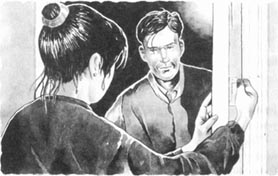
“理查德！”她惊呼道，“你跑到这儿来做什么？”
“我能进去待一会儿吗？”
不等回答，他便从她身旁挤了进去。珍妮弗转向他。每当理查德来访，她都会很高兴，但这次他却来得不是时候。“很抱歉你不能待在这儿。我必须立即动身，和好朋友克莱尔共进晚餐，然后……”她停了下来，因为理查德的眼神看上去既疲惫又焦虑。
“出什么事儿了？”她问道。
就在这时，吉布森大夫从房间里喊道：“护士小姐，我是不是听到门铃响了？是又来病人了吗？”
“不是，只是我弟弟理查德。”她回应道。
她又回身问理查德，“出什么事儿了？”
他摇了摇头说：“我很好，只是……唉，我在工作上遇到了点儿麻烦。”
“麻烦？”
“也没什么，真的。我对老板说了些他不爱听的话，他因此对我大发脾气，最后叫我走人。就这样，我丢了工作。”
“噢，理查德，你以后别再这样了。你为什么要这么做？”珍妮弗开始对他感到生气，“你现在又没钱了，对吧？”
“别紧张，珍妮。我不要太多。20镑就够了，下周我就还你，说到做到。”他把一只手搭在她的胳膊上说，“你可以帮我这个忙的，对吧？只要20镑，我要买件礼物。”
“是的，我知道，我知道。要给一个特别的女孩儿买件礼物，就像上次和上上次一样。”珍妮弗很了解她的弟弟，也经常生他的气，但从未拒绝过他。她打开包，拿出钱递给了理查德。“但记住，下周就要还我。”
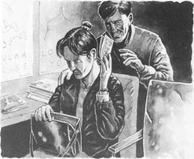
理查德笑着，搂着他的姐姐说：“谢谢，珍妮。这次真的不同！她是个非同一般的女孩儿。不过，既然你着急出门，我现在就走。”
“别忘了，”她在他身后喊道，“下星期，20英镑。”
马克西姆餐厅里异常热闹，有一些在办公室里工作的青年男女、一些年纪较大的人、一群学生和几个剧团的人。珍妮弗环视了一下四周，想找到她的朋友。克莱尔通常坐在靠近窗户的座位上，但是今晚她并不在那儿。有人正举办宴会，那一侧的餐桌已是座无虚席。这时珍妮弗听到背后传来克莱尔的声音，“迷路了吗？我已经到这儿好半天了。”
“我知道我来晚了，”珍妮弗说，“我很抱歉。今天确实很忙。最后一个病人直到8点半才离开，之后理查德又跑来找我，他是来借钱的。他总想向我借钱。”
她们走到一张空桌子旁，一名服务员走了过来，为她们点菜。正在这时，窗户旁聚会的人群中响起一片欢呼声，一位身穿浅灰色西装的年长男士站了起来。几分钟的简短致词后，他举起了酒杯。其他人也都站起身，向一位佩戴着大大的金耳环的年轻女孩儿看过去，她就坐在这位男士身边的椅子上。所有人都笑着唱起了“祝你生日快乐”。他们都看着她，而她却独自坐在那儿，脸上没有一丝笑容。唱完生日歌，大家又兴高采烈地欢呼起来。有人大声喊道：“今天21啦，今天21……”这一次餐厅里的每个人都跟着唱了起来。
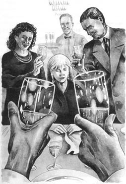
忽然，轰隆一声巨响，有人尖叫起来，一个声音大喊道：“拿毛巾来，快！”身穿灰色西服的男士倒在了桌子上，他用手捂住已经被血染红了的脸。桌子上到处都是打碎的玻璃杯。
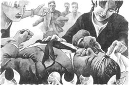
有人大声喊道：“出什么事儿了？他摔倒了吗？”与此同时，另一些人在一旁议论纷纷，“要知道，他的心脏……”“乔这些年已经变成医院的常客了……”“……他的头撞在了那些杯子上。”
那位男士仍然躺在桌子上。珍妮弗匆忙站起身，和克莱尔一起朝他跑了过去。
“我们是护士，”珍妮弗说，“能帮上忙吗？”
那位男士的脸有侧被划伤了，伤口很深，他失血很多。一位服务员手拿毛巾跑过来，珍妮弗接过毛巾，按住伤口。那位男士张着嘴，发出了奇怪的声音。
“他需要看大夫，我们必须把他送到医院去，”珍妮弗说。她转向克莱尔：“你开车来的，对吗？”
“没错。来吧，我们送他去医院。”克莱尔回答道。
她们把这位男士扶到了屋外克莱尔的汽车上，珍妮弗跳上车，坐在他的旁边，然后就出发了。珍妮弗仍旧用毛巾捂着他的脸，这时血已经流得不那么猛了，他开始觉得稍好一些。
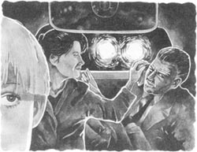
“这是哪里……我们这是去哪里？”他问道，“你们是要送我回家吗？”
“待在那儿了，别说话，”珍妮弗对他说，“你摔倒后伤到了自己。你很快就会没事的，不过你必须去看医生。再过一会儿我们就到医院了。”
一听到“医院”这个词，这位男士立刻就要起身。“不，不，”他生气地说，“我不需要去医院。我现在感觉好多了。请把我送回家。另外，你是谁？”
“我是护士，”珍妮弗告诉他，“你必须去看医生。我们马上就到了。静静地坐着，别说话。”
然而此时这位男士感觉恢复了一些，便不肯安静下来。他拽着珍妮弗的胳膊大喊道：“我不需要什么医生。我脸上不过是划了个小口子，现在已经没事了。送我回家！”见珍妮弗对他置之不理，他便轻声说：“拜托，听我说。我感觉很好，真的。根本没必要送我去医院。医生们会把我留下来的。因为我心脏不好，他们总想让我住院治疗。你要知道，后天我还要去见一些客户，而且事关重大。请把车停下来，我可以打车回家。”
此时车已经开到了医院门口。一名护士走出来接待他们，克莱尔将这场事故的情况告诉了她，珍妮弗则帮忙把他扶出了汽车。他怒气冲冲地对护士说了些什么，但几秒钟之后便跟她走进了医院。随后珍妮弗和克莱尔便驱车离开了。
“真是个麻烦的人！”克莱尔没好气地说，“连句‘谢谢你的帮助’或‘你真是个好人’这样的话都没有。”
“有些人从来不会说谢谢，”珍妮弗说道，“别为这事心烦了。”
当她们返回到马克西姆餐厅时，一辆亮着蓝灯的警车正停在外面。一小群人围在大门旁。珍妮弗从人群中挤了过去，克莱尔紧跟其后。她们想进到餐厅里面。一位警察走上前来，抬起手拦住了她们。“你们必须在此等候。”他告诉她们说。
“但是我们已经点好了晚餐……，而且还什么都没吃呢，”克莱尔说道。
然而这名警察根本没留意她们在说些什么。他正透过玻璃门向屋里张望。只见屋里的人们来回走动着，似乎发生了什么事情。接着马克西姆餐厅的一位服务员推开了门，两名警察押着一个年轻的女孩儿走了出来。她正是生日宴会上那位戴着昂贵金耳环、郁郁寡欢的女孩儿。警察把她推进警车的后排座位上，迅速开走了。
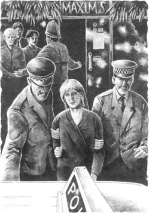
珍妮弗和克莱尔对视了一下。多么不寻常的一个晚上啊！她俩又等了两三分钟，但此时餐厅的门已被关上了，那位警察再一次站到了餐厅门前。
此时两个人谁也不觉得饿了。她们慢悠悠地朝汽车走去。克莱尔先开了口：“别不高兴了，珍妮。咱们来尽情地享受吧，今晚是出来散心的。”珍妮弗一声不吭。
克莱尔继续说道：“你还记得电视上播放的马克西姆餐厅那首小曲吗？”她开始唱道：
快来这音乐的圣地，
快来这美食的天堂，
齐聚马克西姆，
共享欢乐时光。
她停了下来。珍妮弗看起来不太开心。“这一切并不是我所想象的欢乐时光，”她说道，“我累了，本想安安静静好好过一晚，享受一下美味佳肴，然后早点休息的。”
“好了，”克莱尔回答说，“咱们换一家餐馆吧。”
“算了，还是改在下个星期吧。我现在只想回家。”
于是她们互相道了别。“那么，下周再见吧。”克莱尔上车后说道。
珍妮弗步履缓慢地往家走。她闷闷不乐，并为她的弟弟理查德感到忧心忡忡。她又想起了晚上早些时候理查德跑到她诊所找她时的情景。他总是不断找到新工作又不断地失业，且从来都是身无分文。一年前他还和警方扯上了麻烦，但理查德对此却毫不在乎。他从不把任何事情放在心上！他只是一笑而过，然后去向珍妮弗要更多的钱。他俩的父母双双过世，再无其他兄弟姐妹。因此比理查德大15岁的珍妮弗总是对她的弟弟放心不下。
她路过了一家珠宝店，店内仍开着灯，于是她停下脚步，向橱窗里看了一会儿。她看见了一些耳环，不禁想起了马克西姆餐厅里那个女孩儿所佩戴的金耳环。那对耳环很大，似乎价值不菲，看起来与那张娇小而愁眉不展的脸庞格格不入。她从哪儿得到的这对耳环？珍妮弗微微一笑。或许现在警察正在问这个问题呢。
2．A visit from the police
2
A visit from the police
Jennifer did not sleep well that night. She woke up feeling tired and unhappy. When she arrived at Dr Gibson's surgery, she looked into the waiting-room. It was nearly full. Another busy morning, she said to herself. Just then she heard the doctor's car outside. He hurried in and went into his room.
Three hours later he finished with his last patient. Jennifer brought a cup of coffee and put it on Dr Gibson's desk. He said thanks and she turned to go.
'Er—just a minute,' he called after her, 'I want a word with you.' He sounded a little cross. 'There was a phone call for you this morning—about an hour ago. You were busy at the time so I answered it.'
'Oh, who was it?'
'Let me see—I wrote it down somewhere.' He began to move the papers on his desk. 'She said that she was a friend of your brother's.'
'My brother? But why did she want me?'
'Ah, here it is.' He gave Jennifer a piece of paper. On it was a name—Wendy. 'She didn't leave a number. She'll call you again at home.'
Jennifer looked at the name. Wendy?... Wendy who? she asked herself.
'Thank you, Dr Gibson,' she said.
'And tell her, please, no phone calls during surgery hours.'
'I'm sorry. It won't happen again.' Jennifer wanted to explain that she did not know this Wendy but decided not to. A few minutes later Dr Gibson shouted goodbye to her and Jennifer was alone. She knew a few of Richard's friends but nobody called Wendy. But Richard changed his girl friends as often as his shirts! Jennifer did not try to remember all their names.
* * *
At the end of the day Jennifer arrived at her flat and was going up the stairs when she heard voices above. Two men were standing outside her door. One of them came up to her. 'Miss Walton?' he asked. 'My name's Detective Barrett. I'd like to ask you a few questions, please. Can we come in?'
She turned the key in the lock and pushed open the door, and all three of them went inside and sat down.
'It's about Mr Richard Walton. He's your brother, I think,' Barrett began. He spoke softly but he had a hard voice, cold and unfriendly, and his light blue eyes never left Jennifer's face. 'When did you last see him?'
Jennifer told him.
'And before that?'
'I'm not sure—about three or four weeks ago.'
Those light blue eyes were still on her. She was beginning to feel uncomfortable.
'You didn't see him last weekend, then?'
'No.'
'Try to remember—did he come here last Saturday? In the evening?'
'No.'
'You're sure?'
'Yes, of course I'm sure.'
Barrett's voice became a little louder. 'You didn't meet him in some other place? At the airport perhaps?'
'No, I didn't. I haven't seen him for nearly a month, I tell you. Until last night, I mean.'
'Last night...' Barrett said after her. 'Tell us more about last night. You took a man to hospital...from Maxim's restaurant.'
'Yes.'
'A friend of yours?'
'I never saw him in my life before. He fell and hurt himself. They said that he had a bad heart so I went to the hospital with him. That's all.'
'You never saw him before? You surprise me, Miss Walton.' Barrett was watching her carefully. 'You didn't know that he was Mr Joe Kelly, your brother's boss?'
'No, I didn't.'
'Really? You didn't know him? Very strange, don't you think?'
All these questions—she was feeling angry now. She stood up and went across to Barrett. 'Look, Detective Barrett, I'm getting tired of this. What's it all about? You want me to answer your questions and you don't tell me why. What's the matter—I want to know. Is Richard in trouble?'
Barrett held up his hands. 'All right, take it easy.' He gave a little smile but his eyes were cold and he was still looking hard at Jennifer. The other detective said something quietly to Barrett. Then Barrett went on, 'Your brother—what do you know about his girl friend?'
'His girl friend?'
'Yes, Wendy. He works with her at Joe Kelly's.'
Wendy! The mystery telephone call at the surgery that morning! Jennifer tried to hide her surprise. She looked first at Barrett, then at the other man. Then she said coldly, 'Richard doesn't talk to me about his girl friends.'
'He's told you about Wendy, I'm sure. They're very friendly, the two of them. They went to Germany together.' He turned to the other man. 'Last weekend, wasn't it?'
The second detective moved a little nearer and spoke quietly to Barrett. 'She doesn't know anything about this. You'll have to explain it to her.'
Barrett turned to Jennifer again. 'We're looking for some stolen jewellery, from Germany. And we believe that your brother knows something about it. You won't like this, Miss Walton, but your brother works for a criminal, a thief, and one of these days he's going to find himself in trouble.'
'But my brother lost his job yesterday. He told me last night. So he doesn't work for this man any more.'
Barrett smiled. 'Perhaps he doesn't...or perhaps he wants people to think that he doesn't work for Kelly.' He went on. 'If you don't want to see your brother in prison, tell him to keep away from Kelly. And from beautiful young girls like Wendy.'
Jennifer looked at him and said nothing.
Barrett stood up. He looked at the other man and they both moved to the door. Jennifer followed and opened it for them.
'Good night, Miss Walton. Thanks for your help.'
They walked to the top of the stairs. Jennifer waited for a few seconds, then went inside and closed the door.
Oh Richard, she thought. What is happening? What are you doing? Why can't you stay out of trouble?
She telephoned Richard's flat, but there was no answer. So she went to bed, and worried half the night about her young brother.
* * *
The next day, Saturday, she worked only in the morning. When Dr Gibson's surgery finished, she went home to have lunch. Then she planned to go round to Richard's flat and talk to him. But when she got into her flat, the telephone was ringing. She ran across the room and answered it.
'Hello, is that Jennifer Walton?' someone asked. It was a girl's voice.
'Yes, Jennifer here. Who's speaking?'
The caller was silent for a second or two, then said, 'You don't know me, but I'm a friend of your brother's. Are you free just now? I need to see you. It's important.' She went on quickly. 'I'm just round the corner from your flat. Can I come up? I'll be there in three minutes.' And she put the phone down.
Jennifer was waiting at the door when her visitor arrived. She looked at her in surprise. She knew that face. It was the young girl from Maxim's, but without the gold ear-rings today.
The girl was also surprised. 'I saw you at Maxim's on Thursday night,' she said. 'You took Joe Kelly to hospital. Are you Jennifer, Richard's sister?'
'Yes,' said Jennifer. She looked at her visitor, and began to put two and two together. 'And you must be Wendy.'
'Yes,' the girl said.
Jennifer stood back, and the girl went inside. They sat down and Jennifer looked at the girl coldly. So this was Richard's girl friend... who worked for the criminal, Joe Kelly. She had a beautiful little face and looked very unhappy, but Jennifer did not want to like her.
'What do you want to see me about?' she asked.
'It's difficult to explain,' the girl began. She looked unhappily at Jennifer's unfriendly face. 'You see, Richard has told me about you. He says that you're very kind... you always help him. He gave me your phone numbers and said...' She stopped, and Jennifer waited. 'He said that I could ask you for help.'
Jennifer smiled to herself. Always the kind big sister, she thought. She looked at the girl's small, worried face.
'Well, go on, then,' she said more kindly. 'Tell me all about it. I hope that Richard's not in trouble.'
'You see, I work for Joe Kelly,' Wendy began. She talked for a long time, and Jennifer listened carefully.
This was Wendy's story.
stair n. (usu. in pl.) a set of steps built for going from one level of a building to another （楼层之间的）楼梯
detective n. a police officer whose job is to discover information that will result in criminals being caught 侦探；警探
softly adv. in a soft, gentle, or quiet manner （声音）轻地；轻柔地
uncomfortable adj. uneasy; causing or feeling disquiet 不安的；不自在的
boss n. a person in charge; an employer, manager, or over seer 老板；上司
in trouble a situation in which someone in authority is angry with you or is likely to punish you 有了麻烦；受到牵连
mystery n. something that is impossible to understand or explain or about which little is known 神秘（性）
hide v. to not show your feelings to people 隐藏；掩盖（自己的感情）
criminal n. a person who has committed a crime or crimes 罪犯
prison n. a large building where people are kept as a punishment for a crime, or while waiting to go to court for their trial 监狱；看守所
keep away prevent from being near （使）不靠近，（使）远离
caller n. a person who pays a visit or makes a telephone call 来访者；打电话者
silent adj. not saying anything 不作声的
visitor n. a person who visits a person or place 访问者；来客
put two and two together to guess the meaning of something you have heard or seen 根据现有的事实推断；综合起来判断
警察来访
2．警察来访
珍妮弗整晚都没睡好，醒来时依然觉得疲惫，心情很糟。到达吉布森大夫的诊所后，她朝候诊室里瞧了瞧，里面几乎坐满了人。她暗想，又是一个繁忙的早晨。这时她听到了屋外吉布森大夫的汽车声。他匆匆忙忙地走进了自己的房间。
三个小时之后，他看完了最后一个病人。珍妮弗端来了一杯咖啡，放在了吉布森大夫的桌上。他说了声谢谢，珍妮弗随即转身要走。
他叫住她说：“嗯——稍等，我有几句话想跟你说。”听他的语气似乎有些生气。“今天早上，大概一个小时前，有个电话找你。当时你忙得脱不开身，所以我接了。”
“哦，是谁打来的？”
“让我看看，我把它写在什么地方了。”他翻弄着桌上的文件。“她说她是你弟弟的一个朋友。”
“我弟弟？但她打电话找我干什么？”
“噢，在这儿呢。”他递给珍妮弗一张纸。上面写着一个人的名字——温迪。“她没有留下电话号码。她会再给你家里打电话的。”
珍妮弗看着上面的名字。温迪？……哪个温迪？她问自己道。
“谢谢你，吉布森大夫。”她说。
“麻烦你告诉她，就诊时间不要打电话来。”
“我很抱歉。不会再有下次了。”珍妮弗本想向他解释她根本不认识这个叫温迪的人，但她又打消了这个念头。几分钟后吉布森大夫大声说了句“再见”便离开了，屋里只剩下了珍妮弗一人。理查德的朋友她倒认识一些，可却没有一个叫温迪。但是理查德换女朋友就像换衬衫一样频繁！珍妮弗无法把她们的名字全都记下来。
* * *
一天结束后，珍妮弗回到了寓所。上楼的时候，她听到楼上有说话声。两名男子正站在她家门口，其中一位向她走来。“您是沃尔顿小姐吗？”他问道，“我是警探巴雷特。请允许我问你几个问题。我们可以进屋吗？”

她用钥匙开了锁，然后将门推开，三个人进屋坐了下来。
“是关于理查德·沃尔顿先生的事情。我想他是你弟弟。”巴雷特开始说道。他说话声音很轻，但却强硬、冷淡，让人感到不友好，他那双淡蓝色的眼睛一直目不转睛地盯着珍妮弗的脸。“你最后一次见到他是什么时候？”
珍妮弗告诉了他。
“那么之前一次呢？”
“我不是很确定，大概是三四个星期之前吧。”
这双淡蓝色的眼睛依然注视着她。这让她开始感到很不自在。
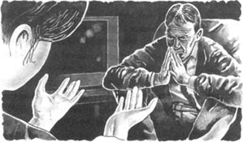
“这么说来上个周末你没有见到他喽？”
“没有。”
“试着好好想想。上周六他来过这儿没有？晚上的时候？
“没有。”
“你肯定吗？”
“是的，我当然可以肯定。”
巴雷特稍稍提高了嗓门。“你没在其他地方见过他吗？比如说在机场？”
“是的，我没见过他。告诉你我差不多已经一个月没见过他了。我的意思是直到昨天晚上。”
“昨晚……”巴雷特接过她的话。“请告诉我们更多关于昨晚的情况。你从马克西姆餐厅……送一位男士去了医院？”
“是的。”
“他是你的朋友？”
“我以前从没见过他。他摔倒后伤着了自己。他的同伴们说他心脏不好，所以我就送他去了医院。就这样。”
“难道你以前从没有见过他吗？沃尔顿小姐，你真让我感到吃惊。”巴雷特仔细观察着她的表情。“难道你不知道他就是乔·凯利先生，你弟弟的老板吗？”
“是的，我不知道。”
“真的吗？你不认识他？你不觉得这太奇怪了吗？”
这一连串的问题开始让她感到恼怒。她站起身，走向巴雷特，“听着，巴雷特警探，我简直烦透了。这一切是怎么了？你想让我回答你的问题，却不告诉我是为了什么。我想知道出了什么事。是理查德遇到了什么麻烦吗？”
巴雷特抬起了手。“没什么，别紧张。”他挤出一丝微笑，但那双冷漠的眼睛仍死死盯住珍妮弗。另一位警探悄悄地对巴雷特说了些什么，然后巴雷特继续说道，“你弟弟——你认识他的女朋友吗？”
“他的女朋友？”
“是的，温迪。理查德和她同在乔·凯利的公司做事。”
温迪！早上在诊所接到的神秘电话！珍妮弗试图掩饰内心的惊奇。她先看了看巴雷特，又看了看另一位警探。然后冷冷地说：“理查德没跟我提起过他的女朋友。”
“我敢肯定他跟你提起过温迪。他们彼此相处得非常融洽，还一起去了德国。”他扭头对另一个警探说，“是上周末，对吧？”
另一个警探稍稍凑近了一些，轻声对巴雷特说：“她对此毫不知情。你得向她解释解释。”
巴雷特又回过头对珍妮弗说：“我们正在寻找一批从德国偷来的珠宝。我们相信你弟弟了解一些情况。沃尔顿小姐，这话你恐怕不爱听，但你弟弟是在为一个罪犯、一个小偷效劳，很快他就会发现自己惹上麻烦了。”
“但我弟弟昨天丢了工作。他昨晚告诉我的，所以他以后不会再为这个人干活了。”
巴雷特笑了。“他有可能不再为凯利工作了，也有可能只是想让别人这么认为。”他接着说道，“如果你不想看到你弟弟坐牢的话，就让他离凯利远点儿，还有离像温迪这样年轻漂亮的女孩远点儿。”
珍妮弗看着他，一言不发。
巴雷特站起身，瞅了另一位警探一眼，便和他一起朝大门走去。珍妮弗跟在他们身后，为他们打开了门。
“晚安，沃尔顿小姐。感谢你的帮助。”
他们走到了楼梯口。等了几秒钟之后，珍妮弗走进屋，关上了门。
噢，理查德，她心里想道。出什么事儿了？你在做什么呢？为什么你就不能不惹是生非呢？
她给理查德的住所打了电话，但无人接听。于是她上床躺了下来，并且整整半宿都在为她这个弟弟担忧。
* * *
翌日是星期六，她只有一个上午的班。在吉布森大夫的诊所里忙完后，她就回家吃午饭，然后打算绕道去理查德的公寓跟他谈谈。然而她刚进家门电话铃就响了，她穿过屋子，跑过去接起了电话。
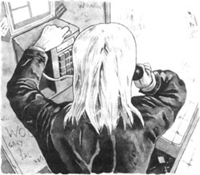
“你好，是珍妮弗·沃尔顿小姐吗？”对方问道。这是个女孩儿的声音。
“是的，我是珍妮弗。您是哪位？”
打电话的人沉默了片刻，然后说道：“你不认识我。我是你弟弟的一个朋友。你现在有时间吗？我想跟你见一面，这件事非常重要。”她又立即接着说，“我就在你公寓附近的拐角处。我能上去吗？3分钟就到。”她随即放下了电话。
当这位来访者到达时，珍妮弗正等在门口。眼前的女孩让珍妮弗大吃一惊，她认得这张面孔。她正是马克西姆餐厅里的那位年轻女孩，不过今天她没有戴那对金耳环。
那个女孩也同样感到很吃惊，“星期四的晚上我在马克西姆餐厅里见过你。”她说道，“你带乔·凯利去了医院。你真的是理查德的姐姐珍妮弗吗？”
“是的。”珍妮弗回答道。她上下打量了一下来访者，心里不由得开始推测。“那你一定是温迪了。”
“没错。”女孩儿说。
珍妮弗退后一步，让女孩儿进了屋。两人坐了下来，珍妮弗冷冷地看着这个女孩儿。这么看来她就是理查德的女朋友了……她为乔·凯利这个罪犯做事。她有一张娇小美丽的脸，满面愁容。不过珍妮弗并不希望自己喜欢上这个女孩儿。
“你想见我是为了什么事？”她问道。
“这事解释起来有些困难，”女孩儿开口说道。她郁郁地看着珍妮弗，而珍妮弗也显出了一脸的不友善。“你知道，理查德跟我谈起过你。他说你为人善良，……还总是帮着他。他把你的电话号码给了我，并且说……”她停了一下，珍妮弗等着她继续把话说完。“他说我可以找你帮忙。”
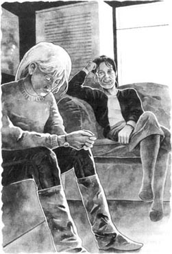
珍妮弗暗自微微一笑，看着女孩儿那张娇小但却显得心事重重的脸，心想：“我一向都是慈爱的大姐姐。”
“那么，请接着讲吧，”她用更为温和的语气说道。“告诉我发生的一切。我希望理查德没有遇上什么麻烦。”
“要知道，我为乔·凯利做事，”温迪开始说道。她滔滔不绝地讲了好长时间，珍妮弗聚精会神地听着。
这便是温迪的故事。
3．Wendy's story
3
Wendy's story
Kelly is not a nice man, and I've never liked him. I've worked for him for a year now. My father got the job for me—he told me to work hard and not to ask questions. Kelly often gets angry, and when he's angry, he shouts at everyone and his face goes very red. I'm afraid of him, but I don't want to lose my job. I need the money and it's not easy to find another job.
Richard started work at Kelly's about a month ago. We're good friends, but we don't talk much about our jobs. Nobody at Kelly's talks about the work. We don't really know what his business is. He has two garages in the town and he buys and sells old cars. But he also buys and sells a lot of other things, too—furniture, old pictures, jewellery. I think that some of these things are stolen, but I don't ask questions.
Ten days ago Kelly called me into his office. I stood there and waited. He began to say something to me, but he stopped and looked down at his papers. Then he took out his diary and opened it.
'Wendy, what are you doing next weekend?'
'I'm not sure, Mr Kelly.'
'How would you like to go on a little business trip? I'll pay you for it, of course.'
This surprised me, and I did not reply immediately. Then I said, 'A business trip, Mr Kelly?'
'Yes, to Germany... just for the day. It isn't a difficult job but it's important. What do you say?'
I did not know much about Mr Kelly's business, but I did know that there was something strange about these journeys to other countries. They happened every two or three months, and after them there were secret meetings in the office, often late in the evening. I decided that I did not want to go.
'But... but I've never been to Germany. Don't you think... well, perhaps you can ask one of the others.'
'I'm asking you, Wendy. I said that it was important and I want you to do it.' I began to say something but he was still speaking. 'I have friends in Frankfurt and they want to send me some things. They'll give you three small boxes, like egg boxes, and you'll bring them back here. There's nothing difficult about that, is there?'
I didn't say anything.
'Are you listening to me, Wendy?' he asked. 'I need you to do this job for me.' His voice was getting louder now.
I looked him in the face. 'I'm... I'm sorry, Mr Kelly. I've just remembered. I'm busy next weekend. I can't do it.'
He jumped up and his chair fell back. 'Now, just you listen to me, young woman. You work for me, remember that. I'm the person who pays you.' He caught my arm and shook me. 'This time I'm telling you, not asking you. You'll go to Frankfurt or there'll be trouble. You will leave on the first plane on Saturday morning and come back the same evening. With the three boxes. And don't say a word to anyone, do you understand?'
Then he walked out.
I didn't sleep much that night. Or the next. I wanted to tell Richard but he was out of town on another of Kelly's jobs. What could I do? I was afraid, and Kelly knew that I was afraid. He did not speak about it again but on Friday he called me into his office and gave me my plane ticket and some money. There was no escape.
Saturday morning came, and I went to the airport. While I was waiting there, I heard my name. I knew that voice immediately. I turned round. 'Richard!' I cried. 'Oh Richard, I'm so pleased to see you. But what are you doing here?' 'I'm coming with you. To Frankfurt. Kelly told me to. Look, here's my ticket.'
'You mean... Wait a minute. What did Kelly tell you?'
Richard was smiling. 'He told me to come with you, that's all. To stay with you... you know, on the plane... and in Frankfurt.'
I began to understand. 'He told you to watch me, you mean.'
When we were on the plane, Richard asked me about my work at Kelly's. He knew very little about Kelly's business and he knew very little about our trip to Frankfurt. I told him about the 'egg' boxes and why I was afraid. 'The boxes are small, Kelly said, so I think it's jewellery,' I told Richard. 'And I think...I think it's stolen jewellery.'
Then Richard got very angry, and said, 'Kelly can't send you on a job like this. Why doesn't he go himself?'
'But that's it, Richard. It's easier for a girl—Kelly knows that. He's clever, you know. But he thinks I'm afraid. So he's sent you to watch me.'
For a time Richard just sat there, and thought. After a while he turned to me. 'You're not going to do it—you're not going to carry stolen jewellery for that man. Leave it to me. I'll think of something, of some plan.' Then he was silent again.
When we arrived in Frankfurt, we went to a hotel for breakfast. Then Richard went off to buy a newspaper, and after that we sat around for about half an hour.
We had to meet Kelly's friends outside the hotel. When we walked out of the door, two men were waiting for us in a white Mercedes. We drove through the busy streets of the city and then into the country. Some time later we stopped at an old house with trees all around it. We all went inside and the men took us into a dark room at the back and left us there. It was cold and Richard gave me his coat. He was smiling quietly to himself.
We waited there in silence. In another room people were talking. We could hear their voices. Then the driver of the Mercedes came and took us upstairs. A short man in a dark green shirt was sitting at a desk. In front of him on the desk were three boxes. He was playing with a pen and watching us carefully. Richard spoke to him in German. I did not understand, but I heard Kelly's name and the man in the green shirt began to say something.
All at once there were noises outside, the sound of cars and voices and people running. The man jumped up from his desk and pulled a gun out of his pocket. He tried to get to the window but at that minute the door opened and three or four policemen ran in and jumped on him. There was a fight, but the police got his gun from him and held him on the floor. An older man arrived, a police inspector with grey hair, and began to give orders to the policemen. He called across the room to Richard and me in very good English, 'Are you all right? They didn't hurt you, did they?'
He gave some more orders and then he came across to Richard and held out his hand. 'Well done, young man. I must thank you for your help.' He turned to me. 'And thank you too. You've done very well, both of you. It's been a good day's work for all of us.'
I looked at Richard and he gave me a little smile. 'What does he mean?' I asked, but Richard did not answer.
The inspector then explained to me. 'Your friend phoned us this morning from your hotel. After that it was easy. We just waited near the hotel for the white Mercedes and then followed it here.'
The inspector took us back into Frankfurt in his car and when we arrived there, we went at once to his office. He ordered coffee for us and while we were waiting for it, he said, 'You've helped us a lot already but we need your help with one more thing. There's still Mr Kelly...and his friends. We have a plan for them.' Oh yes, he knew all about Joe Kelly.
He brought out the three boxes and put them on the table in front of us. Then he said, 'We would like you to take these back to England with you.'
Richard and I looked at him in surprise.
The inspector waited for a minute and then went on, 'You don't need to be afraid. Perhaps you're thinking about the British police, is that it? Everything will be all right. I will speak to Chief Superintendent Edwards in London, and there'll be no trouble for you. Now listen carefully.' He went on. 'Just give the jewellery to Kelly. He won't know about the "accident" to his German friends, and you must not tell anybody about it, or about our conversation today. That's very important. The British police will watch Kelly and wait. Do you understand?'
This plan sounded dangerous to me but Richard said, 'Yes, of course we'll do it, won't we, Wendy?' Richard is not afraid of Kelly, you see.
So we brought the boxes back with us on the Saturday evening plane from Frankfurt. We did not get back until nearly midnight but we took the boxes at once to Kelly's house. He told us to wait and then went into another room. When he came back, he was very happy. He put his hand in his pocket and took out some gold ear-rings. 'These are for you, Wendy—for your birthday next Thursday.'
'No, Mr Kelly, no, you mustn't. I can't take them, really I can't.'
'Of course you can,' Kelly laughed. 'You've worked hard for them. And we must have a party for you. Let's get some people together on Thursday night. Where would you like to go? To the Ritz? Or perhaps a disco? No, I know...', and he began to sing:
Let's all meet at Maxim's,
We'll have a wonderful time.
I told him three times that I didn't want a party but he didn't want to listen. He was too pleased with himself. 'Oh, yes, Wendy. We must have a party. And you must wear the ear-rings. Then I'll know you're my good little girl.' His mouth was smiling but his eyes were cold.
Richard said quietly in my ear, 'Just agree with him, Wendy. And take his ear-rings—you can give them back later. We don't want anything to go wrong now.'
The next few days passed very slowly. On Monday and Tuesday everything was quiet in the office. Kelly did not speak to me again about the visit to Frankfurt. He stayed in his office most of the time and was always on the telephone. No police came to the office, and nothing happened. I began to feel afraid.
Early on Wednesday morning Richard called in to see me. 'Is he in yet?' he asked. He looked at Kelly's door.
'Not yet. Why?'
'I want the keys to his office. just for a minute.'
'But Richard...'
'Come on, Wendy, he'll never know.'
'You can't go in there, Richard. He'll be here in a minute—it's too dangerous.'
'Please, Wendy. It won't take long. I'll be out again immediately.'
'But why... what do you want?'
'Don't ask questions. Just give me the keys—quickly.'
Of course in the end I gave him the keys. He opened Kelly's door and went inside. Some minutes passed and then he gave a shout. 'I think I've got something!'
I went in and saw that Richard was standing in front of Kelly's desk with a letter in his hand. He held it up for me. 'This', he said, 'is going to help us.'
'What do you mean?' I did not understand.
'Listen.' He read from the letter... the eggs arrived last weekend and they are now in my house, Be there on 18th April, 11 a.m.
'The 18th,' said. 'That's next Saturday.'
Just then I heard a car outside. 'That's him,' I cried. 'Quick, put that letter back. You must get out of here at once.'
I ran through to my office with Richard behind me. 'Out there—quick.' I pushed him into the kitchen and at the same time the door opened and Kelly walked in.
'Good morning, Wendy.' He did not stop but went into his office and closed the door behind him.
Richard then quickly left the office and I did not see him again that day. He phoned me the next afternoon, which was Thursday. I knew at once that he was unhappy about something.
'What's happened, Richard?' I asked.
'I'm not working for Kelly any more,' he told me. 'This morning Kelly told me to do another of his little jobs for him, and I said no. So he started shouting at me, and then he told me to go. So that's it—I'm looking for another job.' He gave a little laugh. 'And worse than that, he hasn't paid me, and now I can't buy you a birthday present.'
'Oh Richard, that's not important,' I said. 'But are you coming to Kelly's party for me at Maxim's tonight? I won't go without you. You must come.'
'I can't, Wendy. I'd like to be there, you know that. But we mustn't meet until after Saturday.'
'Why not? What's happening on Saturday? And what's happening about the...the egg boxes? What are the police doing? Kelly says I must wear my new gold ear-rings at the party, but I don't want to. They came from Frankfurt in one of those egg boxes, and they're stolen! Oh Richard, I'm afraid! What am I going to do?'
'Everything's going to be all right, Wendy. Really. I've got a plan. Just go to the party, and don't worry. I'll see you soon.'
Richard put the phone down, and I have not seen or heard from him since then.
garage n. a place that repairs or sells cars 汽车修理厂
furniture n. the movable equipment of a house, room, etc., e.g. tables, chairs, and beds ［总称］家具
journey n. an act of going from one place to another, esp. at a long distance （多指陆路长途的）旅行；行程
secret adj. kept or meant to be kept private, unknown, or hidden from all or all but a few 保密的
escape n. the act of getting away from a place 逃脱
watch v. to be careful with or pay attention to 注意；当心
sit around to spend a lot of time sitting and doing nothing very useful 闲坐；无所事事
in silence without speech or other sound 安静地；沉默地；无声地
all at once without warning; suddenly 突然；忽然
fight n. an act of fighting in which two people or groups hit, push etc. each other 搏斗
police inspector a police officer below a superintendent and above a sergeant in rank （警察）巡官；警察分局局长
chief superintendent a senior police officer above the rank of inspector 总警司
call in pay a brief visit 到某人的家（或办公处等）访问
kitchen n. the room or area where food is prepared and cooked 厨房
hear from to receive news from someone 收到……的信（或电报等）
温迪的故事
3．温迪的故事
凯利并不是个正派的人，我压根儿就不喜欢他。我为他做事已经有一年了。这份工作是我父亲帮我找的——他嘱咐我要勤勤恳恳地工作，不要问东问西。凯利经常发脾气，每当这时，他就会面红耳赤，对所有人大吼大叫。我很怕他，但又不想失去这份工作。我需要钱，而要找到其他工作又不那么容易。
理查德大约是在一个月前开始为凯利做事的。我们是很好的朋友，但却很少谈论工作上的事。为凯利做事的人都不会去谈论工作。我们并不知道他究竟做的是什么样的生意。他在城里拥有两家汽车修理厂，从事旧车买卖。不过他也买卖其他各色商品，如家具、古画、珠宝等。我想其中一些东西应该是偷来的，但我从不过问。
十天前，凯利把我叫进他的办公室。我站在屋里，等着他发话。他开始跟我说了些事，却又止住了，他低头看了看文件，然后拿出他的日记本打开来。
“温迪，下个周末你打算干些什么？”
“我还不太清楚呢，凯利先生。”
“出个小差你觉得如何？当然，我会给你酬劳的。”
他的话让我很是意外，我没有立即回答，问道：“凯利先生，您要我出趟差？”
“是的，去德国……当天去当天回。这份差事并不难，但极为重要。你觉得如何？”
对于凯利先生所从事的买卖我知之甚少，但我却觉得这些去其他国家的出差有些蹊跷。类似的情况每两三个月就会发生一次，而且之后总会在办公室秘密召开一次会议，时间通常都在深夜。我决定不去德国出差。
“可是……可是我从来都没去过德国。所以，您不觉得……哦，您或许可以让其他人去。”
“温迪，我是要你去。我说过这个任务很重要，我希望由你来完成。”我本想说些什么，但他却一直不停地说了下去：“我在法兰克福的朋友想送我些东西，他们会给你三个小盒，像鸡蛋盒一样，你把它们带回来就行了。这没什么难的，对吗？”
我什么也没说。
“温迪，你在听我说话吗？”他问，“我需要你替我完成这件事。”他的声音开始大起来。
我看着他的脸。“我……我很抱歉，凯利先生。我刚想起来，下个周末我很忙，恐怕我没法出差。”
他猛地跳起来，椅子倒在了后面。“现在，请你给我听着，年轻人。你要记住，你是在给我工作。是我给你支付薪水。”他一把抓住我的胳膊，把我晃来晃去。“这次我是在命令你，不是在请求你。你必须去法兰克福，否则就会有麻烦。你坐星期六早上的头班飞机离开，当天晚上带着那三盒东西回来。不要跟任何人说，明白吗？”
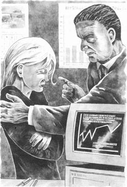
说完他便走了出去。
那天晚上，也许是之后的那个晚上，我辗转难眠。我想告诉理查德，但他却出城处理凯利交代的另一件事情去了。我该怎么办呢？我惴惴不安，凯利也看出来了。他没再对此说些什么，直到星期五那天他把我叫进了办公室，把机票和一些钱给了我。这回真的逃不掉了。
到了星期六早上，我去了机场。当我正在候机时，听见有人叫我的名字。我立刻听出了那个声音。我转过身，“理查德！”我喊道。“噢，理查德，见到你太高兴了。可你在这儿做什么？”
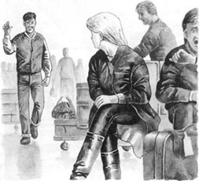
“我是来陪你的，去法兰克福。凯利让我来的。看，这是我的机票。”
“你是说……等等。凯利都跟你说了些什么？”
理查德笑了。“他让我陪你一起去，仅此而已。就是说，在飞机上陪着你……在法兰克福也是。”
我开始明白了。“你是说，他让你看着我。”
坐上飞机以后，理查德问起我在凯利公司的工作情况。对于凯利的生意他几乎一无所知，对于我们这次法兰克福之行他也知之甚少。我告诉了他那几个“鸡蛋”盒子的事以及我害怕的原因。“凯利说那些盒子很小，所以我认为那些应该是珠宝。”我告诉理查德，“而且我认为……我认为那些是偷来的珠宝。”
听到这儿，理查德愤愤不平地说道：“像这样的事凯利就不该叫你去做。为什么他不自己去？”
“但这就是问题所在，理查德。这件事由一个女孩儿来办会更轻而易举，凯利对此也心知肚明。要知道，他很精明。但是他认为我很害怕，所以派你来监视我。”
理查德坐在那里冥思苦想了一阵子。过了一会儿他转过身来对我说：“你不要去办这事了——你不要为他运送偷来的珠宝了。把这件事留给我处理。我会好好考虑，想出一个主意的。”说完他又沉默不语了。
到达法兰克福以后，我们走进了一家饭店吃早餐。吃完饭理查德出门买了份报纸，之后我们便无所事事地坐着待了半个小时。
我们要在饭店外面和凯利的朋友见面。当我们走出饭店大门时，两个男人正坐在一辆白色的奔驰车上等着我们。我们驱车驶过市区一条条川流不息的街道，开进了郊区，不久后在一栋绿树环抱的老房子前停了下来。我们都走了进去，那两个人把我们带进了后面一间昏暗的屋子，并把我们留在了那儿。屋里冷飕飕的，理查德便把他的外衣给了我。他暗自笑了笑。
我们静静地等在那里。此时另一个房间里有人正在交谈，说话声不绝于耳。接着奔驰车的司机走进来，把我们领到了楼上。一个身穿墨绿色衬衫的矮个子男人正坐在一张桌子旁，他面前的桌子上放着三个盒子。他一边手里玩着钢笔，一边仔细地打量着我们。理查德用德语与他交谈。我听不懂，但我听到了凯利的名字，之后这位穿绿衬衫的男子也开口说了些什么。
突然间屋外一阵嘈杂，有汽车声、说话声以及人们奔跑的脚步声。这名男子猛地从桌子边跳了起来，从口袋里掏出了一把枪。他试图走到窗前，但就在此刻门开了，三四名警察冲进来，扑到了他身上。经过一番搏斗，警察夺走了他的手枪，并把他按在了地上。一位年长的男子赶到了这里并开始对警察们下达指令，那是位头发花白的警察分局局长。他在屋子的另一边用流利的英语朝理查德和我喊道：“你们都还好吧？他们没有伤到你们吧？”
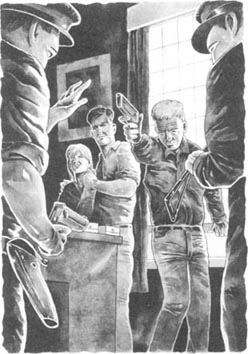
他又做了进一步的指示，然后走到理查德身边，伸出手来。“干得好，年轻人。我要对你的帮助表示感谢。”他又转向我说：“也谢谢你。你表现得很出色，你们两个都是。今天的任务我们所有人都完成得很好。”
我看着理查德，他冲我微微一笑。“他说的是什么意思？”我问道，但理查德并没有回答。
接着，局长向我解释道：“你的朋友今早从饭店给我打来电话。而后的事情就很简单了。我们只是在饭店附近等那辆白色的奔驰车，然后尾随而来。”
局长用他的汽车把我们送回了法兰克福，等我们抵达那里后便立即前往了他的办公室。他为我们点了咖啡。等咖啡的时候，他说：“你们已经帮了我们很大的忙，但还有一件事需要你们的协助。凯利先生……以及他的一些同伙还没有落网。我们已经为他们设下了一个圈套。”噢，是的，他知道所有关于凯利的事。
他拿出那三个盒子，摆到我们面前的桌子上，然后说：“我们希望你们能把这些东西带回英国。”
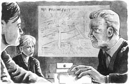
理查德和我诧异地看着他。
局长停顿了一下，然后接着说道：“不必担心。你们可能会担心英国警方那边，对吗？一切都会安然无恙的。我会告诉伦敦的总警司爱德华，你们不会遇上麻烦的。现在请仔细听好。”他继续说道，“把珠宝交给凯利就可以了。对于他这些德国朋友的“意外”他是不会知道的，你们绝对不可以向任何人提及此事以及我们今天的谈话。这一点至关重要。英国警方会监视凯利并等待时机。你们明白了吗？”
对我来说这个计划听起来危险重重，但理查德回答说：“是的，我们当然会这么做。对吗，温迪？”显然，理查德根本不怕凯利。
于是我们坐星期六晚上的航班从法兰克福将那几个盒子带了回来。直到将近午夜我们才回来，但我们立即赶往了凯利的住所。他让我们等一会儿，然后就进了另一个房间。他回来的时候满心欢喜，将手伸进口袋里，并掏出了一对金耳环。“这是给你的，温迪，是为你下周四的生日准备的。”
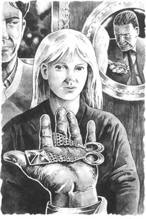
“不，凯利先生，不，您不必送我东西。我不能收，我真的不能收。”
“你当然可以收下它们，”凯利笑着说，“你为此干得很卖力。我们一定要给你开个生日聚会。星期四晚上咱们找些人聚聚。你想去哪里？去里兹大饭店？或者可以去迪斯科舞厅？不，我知道了……，”他唱了起来：
齐聚马克西姆，
共享欢乐时光。
我再三跟他说我不想开生日聚会，但他根本听不进去，只顾着自我陶醉了。“哦，是的，温迪。我们一定要开个生日聚会，而且你必须戴上这金耳环。那么我会觉得你是个听话的小姑娘。”他的嘴在笑，然而眼神却是冰冷的。
理查德在我耳边悄声说道：“就答应他吧，温迪。收下他的耳环，你可以以后再交还。我们现在一点儿差错也不能有。”
之后的几天漫长难熬。星期一和星期二办公室里一切都是那么平静。凯利没再跟我说起这次法兰克福之行。他大部分时间都待在自己的办公室里，不停地打电话。没有警察来，什么事也没发生。我开始感到不安。
星期三一大早理查德跑来找我。“他在里面吗？”他问道，眼睛瞅着凯利的房门。
“他还没到呢。问这个干什么？”
“把他办公室的钥匙给我。就一会儿。”
“但是理查德……”
“快点儿，温迪。他不会知道的。”
“你不能进去，理查德。他马上就会到的。这太危险了。”
“求你了，温迪。用不了太长时间。我很快就会出来。”
“但是为什么……你想要什么？”
“别问这么多。把钥匙给我，快。”
当然，最后我还是把钥匙交给了他。他打开凯利的房门，走了进去。几分钟过去了，只听他大叫一声。“我想我找到了。”
我走进去，只见理查德站在凯利的桌子前，手里拿着一封信。他朝我举起信。“这个，”他说，“会帮得上我们。”
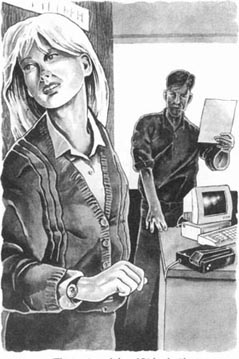
“什么意思？”我没明白。
“听着。”他开始读手中的信……鸡蛋上周末已经拿到手了，现在就在我家里。4月18号上午11点见。
“18号，”我说。“是下个星期六。”
就在这时我听到了屋外的汽车声。“是他，”我惊呼道，“快，把信放回去。你必须立刻出去。”
我赶紧跑回办公室，理查德跟在我身后。“从那儿出去，快。”我把他推进了厨房，就在那一刻门开了，凯利走了进来。
“早上好，温迪。”他没有停下脚步，而是直接走进办公室并关上了门。
然后理查德便赶忙离开了，那天我没再看见他。第二天下午，也就是星期四，他给我打了电话。我一下就听出他有些不开心。
“出什么事了，理查德？”我问。
“我不再为凯利做事了，”他告诉我说，“今天早晨他又让我为他干点小活儿，我一口回绝了他。于是他便对我大喊大叫，并叫我走人。事情就是这样。我要再找份工作。”他轻轻笑了一声。“比这更糟的是，他没有付给我工资，所以我现在没钱给你买生日礼物。”
“噢，理查德，那不重要，”我说，“但是你会参加今晚凯利为我在马克西姆餐厅举办的生日聚会吗？没有你我是不会去的。你一定要来。”
“我来不了，温迪。我很想去，你是知道的。但是得到星期六之后我们才可以见面。”
“为什么不能见面？星期六会发生什么？还有那些……那些鸡蛋盒子又会怎样？警察正在干什么呢？凯利说我必须在生日聚会上戴上这对崭新的金耳环，可我不想戴。它们是从法兰克福带回的那几个鸡蛋盒子中的东西，它们是被盗的赃物！噢，理查德，我害怕极了！我该怎么办？”
“一切都会迎刃而解的，温迪。真的。我想到了一个计划。尽管去参加你的生日聚会吧，用不着担心。不久后我就会见到你的。”
理查德挂断了电话。自此之后我没再见到他，也没收到过他的信。
4．Another birthday present
4
Another birthday present
Jennifer felt very sorry for Wendy. The girl's hands were shaking, and she was trying not to cry. Jennifer went and sat next to her, and put her arm round her.
'So what happened after the party on Thursday night, when the police took you away?' she asked quietly.
'Oh, it was terrible!' Wendy said. 'They took the ear-rings from me, of course, and they asked a lot of questions. I told them that the ear-rings were a present from Kelly, and I told them all about the police in Germany, but they didn't believe me. They told me to go to the office on Friday, and not to say anything to anybody. And they wanted to talk to Richard.'
Wendy turned to Jennifer. 'What am I going to do?' she asked. 'Why didn't the police believe me? Haven't the German police talked to them? And where's Richard? I can't find him.' She began to cry quietly.
Jennifer stood up. 'We must phone the police in Germany,' she said. 'I'll talk to that policeman, Barrett, who came to see me last night, and...'
Just then there was a knock on the door. Jennifer went to the door and called out, 'Who is it?'
'It's me! Richard! ' came Richard's excited voice.
Jennifer opened the door quickly. Beside Richard there were two policemen—Barrett and another taller man.
'Everything's OK,' Richard said happily. He turned to the two policemen and smiled. 'And you're not going to lock me up, are you?'
'I'm very pleased to hear that!' said Jennifer. 'But what's going on? Can somebody please explain?'
They all went into the sitting-room, and Wendy jumped up. She looked at the policemen and her face went white. Everybody began talking at once, and Richard put his arms round Wendy.
The tall policeman laughed and turned to Jennifer. 'My name is Edwards,' he said. 'I'm sorry about Barrett's visit to you last night, but we didn't know about Richard and Wendy then. I talked to the Frankfurt police an hour ago. We already knew about the stolen jewellery in Germany, of course, and we were watching Kelly. But they didn't tell us that they caught the German thieves last weekend, or about their little plan with Richard and Wendy. They wanted to keep it very secret. They were afraid that Kelly would hear about it. But we know now, and everything's all right.'
'But what about Kelly?' cried Wendy. 'And the egg boxes...?'
Barrett smiled. 'You'll have to find a new boss. Kelly is going to be in prison for a long time. We got him this morning. But it's Richard's story. He's been very helpful to us. He can tell you all about it.'
The two policemen left, and Jennifer turned to her young brother. He was sitting with his arm round Wendy, and her face was now bright and happy.
'Well!' Jennifer said. 'Start talking, Richard!'
'I've told Jennifer all about last week,' Wendy explained. 'And she was in Maxim's on Thursday night. But what happened this morning?'
Richard laughed. 'When I looked in Kelly's office last Wednesday, I found that letter about the "eggs". You remember, Wendy? Well, the German policeman told us to do nothing, but I wanted the British police to catch Kelly. Perhaps they were watching Kelly carefully, but I wanted to be sure. So early this morning I went to the police station and told them about the letter. They were not very friendly and they kept me in the police station. But they went to Kelly's house at eleven o'clock. They found Kelly there and two other men, who were buying the stolen jewellery from Kelly. So they brought Kelly and the two other men into the police station...and the egg boxes, of course. Kelly was very angry, and told the police that Wendy and I were the thieves! I told Barrett and Edwards about the German policeman's plan again and again, and in the end they telephoned Germany and talked to the inspector in Frankfurt. He explained everything. So here we are!'
Richard laughed again, happily. He put his hands in his pockets. 'And here's twenty pounds for my big sister, and a little birthday present for my favourite girl.'
Jennifer looked at him. She suddenly felt very happy about her brother. ' You can keep the money,' she said. 'It's not important. But I only gave it to you on Thursday night,' she said. 'How...?'
'I've got a new job,' said Richard. 'Started yesterday. And this time I'm not working for a jewellery thief!'
Wendy opened her present, and laughed for the first time that day. 'Oh look!' she said. 'It's some gold ear-rings! They're lovely.'
Richard laughed too. 'They're only small ear-rings, Wendy, but I can tell you this—they did not come from Frankfurt in an egg box!'
feel sorry for have pity or sympathy for (a person) 对……感到可惜
lock vt. to put someone in prison 把（某人）关进监狱
again and again repeatedly 再三地
favourite adj. preferred to all others 特别受喜爱的
lovely adj. beautiful or attractive 美丽的；可爱的
又一个生日礼物
4．又一个生日礼物
珍妮弗对温迪深感同情。这个女孩儿的手在发抖，她试图压抑住自己不哭。珍妮弗走过去坐到她身旁，搂住了她。
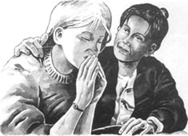
“那么星期四晚上的生日聚会上警察将你带走后又发生了什么？”她轻声问道。
“噢，简直糟糕透了！”温迪说，“不用说，他们从我这里拿走了耳环，接着他们又问了很多问题。我告诉他们耳环是凯利送我的礼物，并将德国警方的事情原原本本地全告诉了他们，但他们却不相信我。他们让我星期五去办公室，而且对任何人都要守口如瓶。另外，他们还想跟理查德谈一谈。”
温迪转向珍妮弗。“我该怎么办呢？”她问，“警察为什么不相信我？难道德国警方还没有跟他们进行沟通吗？还有，理查德在哪里？我找不到他。”她开始小声地哭了起来。
珍妮弗站起身。“我们必须给德国警方打电话，”她说，“我要跟那个警察，巴雷特，谈一谈。他昨晚找过我，还……”
这时门响了。珍妮弗走到门前，大声问道，“是谁啊？”
“是我！理查德！”门外传来了理查德激动的声音。
珍妮弗马上打开了门，只见在理查德身边站着两名警察——巴雷特和另外一位个头较高的男子。
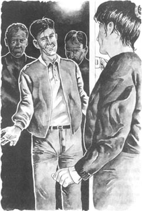
“一切顺利，”理查德高兴地说。他朝两个警察笑了笑，“你们不会把我关起来了，对吗？”
“听到这个我真是太高兴了！”珍妮弗说，“但发生了什么事？有谁能给我解释一下吗？”
当他们全都走进客厅时，温迪一下子站了起来。她看着警察，脸色顿时煞白。很快大家开始交谈起来，理查德搂住了温迪。
高个子警察笑着转向珍妮弗。“我叫爱德华，”他说。“对于昨晚巴雷特的来访我深表歉意，不过那时我们还不知道理查德和温迪的事。一个小时以前我才跟法兰克福警方通了话。我们已经知道了德国珠宝被盗一事，当然，我们一直在监视着凯利。但他们并没有告诉我们他们已于上周末抓获了德国的小偷，也没有说他们和理查德以及温迪之间的小计划。他们怕凯利会有所耳闻，想将此事保密。不过我们现在已经知道了，而且一切都顺利完成了。”
“但是凯利呢？”温迪喊道，“还有那几个鸡蛋盒子……？”
巴雷特笑了。“你得去找个新老板了。凯利将在牢里待很久。今天早晨我们抓到了他。不过，那就要听听理查德讲故事了。他帮了我们的大忙。他会将事情的始末全都告诉你。”
两名警察离去了，珍妮弗转向她的弟弟。他正搂着温迪坐在那里。此时温迪已是神采奕奕，一脸阳光。
“好啦！”珍妮弗说，“开始讲吧，理查德。”
“上周的事情我已全都讲给珍妮弗听了，”温迪解释道。“而且星期四晚上她恰好也在马克西姆餐厅。但是今天早晨又发生了什么？”
理查德笑了。“上个星期三当我进凯利的房间查看时，我发现了那封有关‘鸡蛋’的信。你还记得吧，温迪？唉，德国警方让我们别轻举妄动，但我希望英国警方能抓到凯利。或许他们正严密地监视着凯利的一举一动，但我想得到确认。所以今天早上我去了警察局，将信上所说的内容告诉了他们。他们表现得不太友好，并将我扣留在了那里。不过11点的时候他们还是去了凯利家，在那儿发现了凯利和另外两名男子，这两个人正要从凯利那里购买偷来的珠宝。于是他们将凯利及那两名男子带回了警察局……当然，还有那几个鸡蛋盒子。凯利大发雷霆，告诉警察温迪和我是偷窃珠宝的小偷。我将德国警方的计策跟巴雷特和爱德华重复了一遍又一遍，最后他们给德国打了电话，并和法兰克福的警察分局局长通了话。局长将事情全盘解释了一遍。所以我们都来了这儿！”
理查德又开心地笑了。他把手伸进了口袋里。“这20英镑是还给姐姐的，这件小生日礼物则送给我最心爱的女孩儿。”
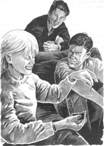
珍妮弗看了看他，她忽然间为这个弟弟感到无比开心。“这些钱你自己留着吧，”她说。“这并不重要。但这是星期四晚上我刚刚给你的，”她说，“怎么……？”
“我已经找到了一份新工作，”理查德说。“昨天开始上班的。这次我不会再为一个珠宝大盗做事了！”温迪打开了礼物，这是她一天里第一次笑。“哦，看呐！”她说，“是对金耳环！真漂亮。”
理查德也笑了。“只是对小耳环，温迪，但我可以向你保证——它们与法兰克福的鸡蛋盒子毫不相干。”
ACTIVITIES: Before Reading
ACTIVITIES
Before Reading
1．Read the story introduction. What do you know now about the story? Tick one box for each sentence.
1) Richard is always borrowing money.
YES □／NO □
2) Richard has a good job.
YES □／NO □
3) Jennifer worries about her brother.
YES □／NO □
4) The police are looking for Richard.
YES □／NO □
5) The police are looking for Jennifer.
YES □／NO □
6) Richard went to Frankfurt by plane.
YES □／NO □
7) Jennifer has some expensive gold ear-rings.
YES □／NO □
2．What will you find out in this story? Can you guess? Choose some names to answer these questions.
Richard/Jennifer/Richard's girl friend/Another person
1) Who stole the ear-rings?
2) Who gave the ear-rings to Richard's girl friend?
3) Who brought the ear-rings from Frankfurt to England?
4) Who gets into trouble with the police?
5) Who asks Jennifer for help?
6) Who helps the police to catch a thief?
ACTIVITIES: While Reading
ACTIVITIES
While Reading
1．Read Chapter 1. Are these sentences true (T) or false (F)? Change the false sentences into true ones.
1) Richard wanted to borrow twenty pounds.
2) Jennifer was cross so she didn't give Richard the money.
3) Jennifer went to Maxim's restaurant alone.
4) The girl who was having a birthday party looked happy.
5) A man called Joe fell and cut his face on some glass.
6) Jennifer and Claire took the man to hospital.
7) The girl with expensive gold ear-rings was taken away by the police.
8) Jennifer worried about her brother.
9) Jennifer knew that Richard worried about everything.
2．Read Chapter 2, and then answer these questions.
Who
1) ... phoned to speak to Jennifer?
2) ... was waiting for Jennifer outside her flat?
3) ... was Mr Joe Kelly?
4) ... was Wendy?
5) ... went to Germany last weekend?
6) ... was a criminal?
7) ... came to see Jennifer the next day?
3．Before you read Chapter 3, can you guess why Wendy wants to talk to Jennifer? Choose some of these answers.
1) Because she is afraid and doesn't know what to do.
2) Because she wants to borrow money.
3) Because she is angry with Richard.
4) Because she is worried about Richard.
4．Read Chapter 3. Choose the best question-word for these questions, and then answer them.
What/Where/Why
1) ... did Wendy want to keep her job?
2) ... was Kelly's business?
3) ... did Kelly want Wendy to go at the weekend?
4) ... did Kelly want Wendy to bring back?
5) ... did Richard go with Wendy on the business trip?
6) ... did Richard do after breakfast in Frankfurt?
7) ... did Kelly's friends drive Richard and Wendy?
8) ... did the German police come to the house?
9) ... was in the egg boxes?
10) ... did the police ask Richard and Wendy to do?
11) ... did Kelly give Wendy for her birthday?
12) ... did Richard find a letter about the 'eggs'?
13) ... was Richard looking for another job?
14) ... didn't Wendy want to wear the ear-rings at her party?
5．Before you read Chapter 4, can you guess what happens? Tick one box for each sentence.
1) Jennifer takes Wendy to the police.
YES □／NO □
2) The stolen jewellery is never found.
YES □／NO □
3) The police catch Kelly with Richard's help.
YES □／NO □
4) Richard borrows more money from Jennifer.
YES □／NO □
5) Richard gives Wendy some gold ear-rings.
YES □／NO □
6．Read Chapter 4. Then join these halves of sentences.
1) When Richard arrived at Jennifer's flat, ...
2) At first Jennifer and Wendy were afraid, ...
3) Richard wanted the British police to catch Kelly, ...
4) The police went to Kelly's house at eleven o'clock...
5) At the police station Kelly said that Wendy and Richard were the thieves, ...
6) Jennifer felt very happy about Richard...
7) Richard also gave Wendy a birthday present, ...
8) but then the police and Richard explained everything.
9) because he wanted to give the twenty pounds back to her.
10) there were two policemen with him.
11) which made Wendy laugh for the first time that day.
12) and found Kelly, two other men, and the egg boxes.
13) but the police phoned the inspector in Frankfurt and learnt the true story.
14) so he told them about the 'eggs' letter.
ACTIVITIES: After Reading
ACTIVITIES
After Reading
1．Match the people with the sentences. Then use the sentences to write about each person. Use pronouns (he, she, him, her, his) and linking words (and, but, so).
Jennifer/Richard/Wendy/Kelly
Example: Jennifer is a quiet, sensible person, and she...
1) ________ is a criminal.
2) ________ is Jennifer's brother.
3) Jennifer is a quiet, sensible person.
4) ________ is fifteen years younger than Jennifer.
5) ________ is Richard's girl friend.
6) ________ is a kind sister.
7) ________ uses other people for criminal business.
8) ________ couldn't find Richard after her birthday party.
9) ________ is sometimes cross with Richard.
10) ________ has had a lot of girl friends.
11) ________ was Richard's and Wendy's boss.
12) ________ can never say 'no' to Richard.
13) ________ went to Richard's sister to ask for help.
14) ________ thinks Wendy is very, very special.
15) ________ is in prison now.
2．What did Richard say to Kelly about Kelly's 'little job' (see here)? Complete Richard's part of the conversation. (Use as many words as you like.)
KELLY: Sit down, Richard. I have a little job for you on Friday night.
RICHARD: What ________?
KELLY: It's not a difficult job, but it's important. I want you to drive a car to Liverpool, and come back by train.
RICHARD: I don't think ________.
KELLY: I'm not interested in what you want. I'm TELLING you to do this. I'm the person who pays you.
RICHARD: Yes, but I won't ________.
KELLY: Criminal? It's just driving a car to Liverpool.
RICHARD: Well, I'm not ________.
KELLY: Right. You've just lost your job—and you can go now.
RICHARD: What about ________?
KELLY: I'm paying you nothing. GET OUT!
3．Here are new titles for the four chapters. Put the titles in two groups (one about people, one about things). Then put the titles in each group in the best order for the story.
| Richard explains | The stolen ear-rings |
| The birthday party ear-rings | Richard in Frankfurt |
| Richard borrows money | The egg-box ear-rings |
| The last ear-rings | Richard in trouble |
4．Put these 15 words into two groups, under these headings.
PEOPLE PLACES
airport, boss, criminal, detective, flat, garage, hospital, hotel, inspector, nurse, office, patient, surgery, thief, waiter
Now find the fifteen words in the word search, and draw lines through them. The words go from left to right, and from top to bottom.
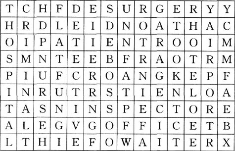
Now write down all the letters that don't have a line through them (begin with the first line and go across each line to the end). You will have 37 letters, which will make a sentence of 10 words.
1) What is the sentence?
2) Who said it, and to whom?
3) What was the person talking about?
5．On Saturday Richard went to the police about the 'eggs' letter. Put their conversation in the right order, and write in the speakers' names. Richard speaks first (number 3).
1) ________ 'Yes, we did, but the German police asked us to bring it back. They had a plan—'
2) ________ 'How do you know it's in Kelly's house?'
3) ________ 'I have something to tell you about Joe Kelly.'
4) ________ 'Eleven o'clock? Right. You wait here, Mr Walton. We'll talk to you later.'
5) ________ 'He's got some stolen jewellery an—'
6) ________ 'Plan? We don't know anything about a plan, but we want this jewellery. Where is it, Mr Walton?'
7) ________ 'Because I saw a letter in his office. And he's metting some people at his house at eleven o'clock.'
8) ________ 'Joe Kelly? Go on, Mr Walton, we're listening.'
9) ________ 'It's in Kelly's house, in three egg boxes, and—'
10) ________ 'And you and your girl friend went to Frankfurt to get the jewellery for him, didn't you, Mr Walton?'
6．What did you think about the people in this story? Choose some names and complete some of these sentences.
Jennifer/Richard/Wendy/Joe Kelly
1) I liked/didn't like ________ because________.
2) I felt sorry for ________ when/because________.
3) I felt angry with ________ when/because________.
封底
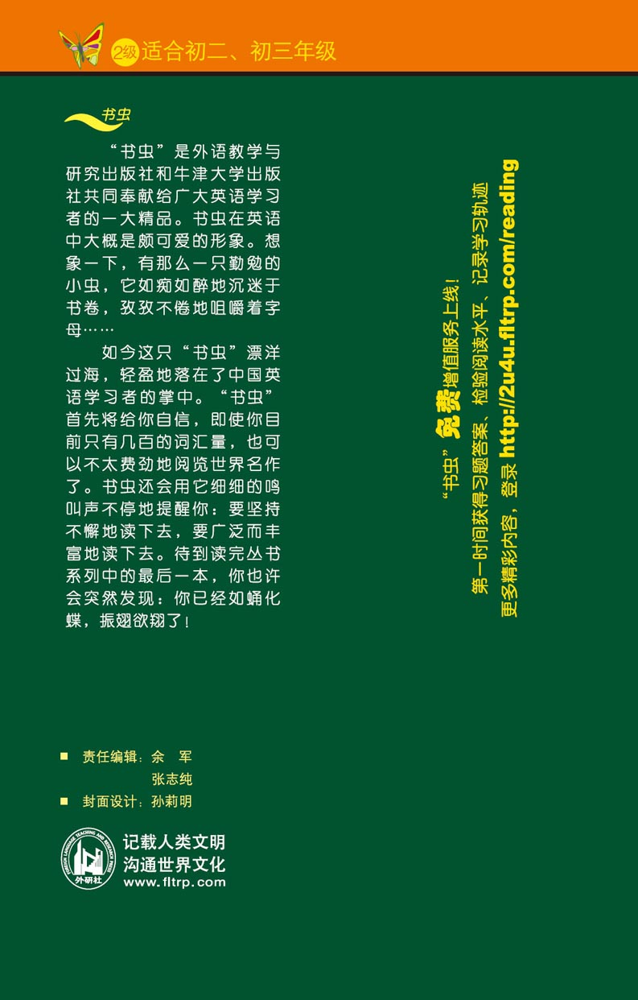